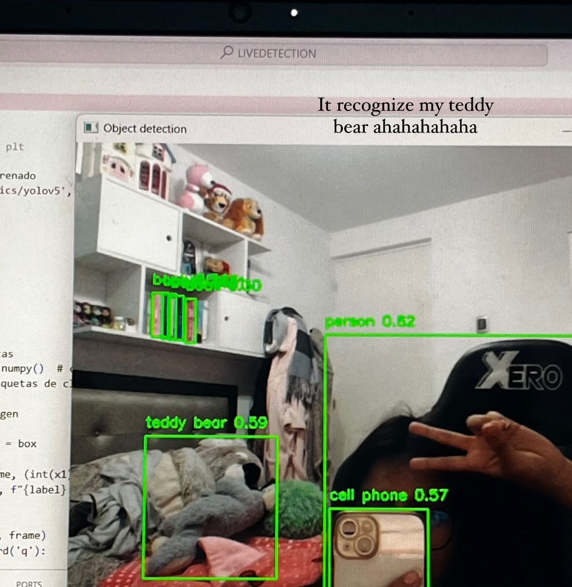

DESCUBRIENDO EL MUNDO DE OPENCV
Siempre me interesaron los programas de reconocimiento facial, así que, decidí tratar de entender el funcionamiento, y termine entrando sin querer queriendo al mundo del openCV; y es que es así, siempre la curiosidad es la que te hace aprender nuevas cosas. No soy una experta claro está, no he tomado cursos; sin embargo, tras horas de navegar en internet es increíble las cosas que una puede aprender. Acá te tengo el programa con cámara en vivo.
RECOMENDACIONES
Bueno yo ejecute todos mis programas con el VScode, te recomendaría hacerlo de la misma forma. Cuando veas yolov5, significa que usamos la versión de yolo 5, yolo es un modelo de IA entrenado para detectar distintos objetos. yolov5s, significa la versión small, con yolov5m, la versión medium y con yolov5L la versión large. Si quieres cerrar la ventana emergente que te saldrá, presiona "q" como lo ves en el código, puedes modificarlo si gustas.
RECURSOS
Usaremos como guía los repositorios de github:
https://github.com/Kent-Taylor/object-detection/blob/main/main.py
Estas son las librerías que instale, en tu terminal ejecuta los siguientes
comandos:
-pip install torch
-pip install --upgrade pip
-pip install cvlib
-pip install opencv-python
-pip install matplotlib
RESULTADO

CÓDIGO
import torch
import cv2
from matplotlib import pyplot as plt
model = torch.hub.load('ultralytics/yolov5', 'yolov5s')
video = cv2.VideoCapture(0)
while True:
ret, frame = video.read()
results = model(frame)
bbox = results.xyxy[0].cpu().numpy()
labels = results.names
for box in bbox:
x1, y1, x2, y2, conf, cls = box
label = labels[int(cls)]
frame = cv2.rectangle(frame, (int(x1), int(y1)), (int(x2), int(y2)), (0, 255, 0), 2)
frame = cv2.putText(frame, f"{label} {conf:.2f}", (int(x1), int(y1)-10), cv2.FONT_HERSHEY_SIMPLEX, 0.5, (0, 255, 0), 2)
cv2.imshow("Object detection", frame)
if cv2.waitKey(1) & 0xFF == ord('q'):
break
video.release()
cv2.destroyAllWindows()